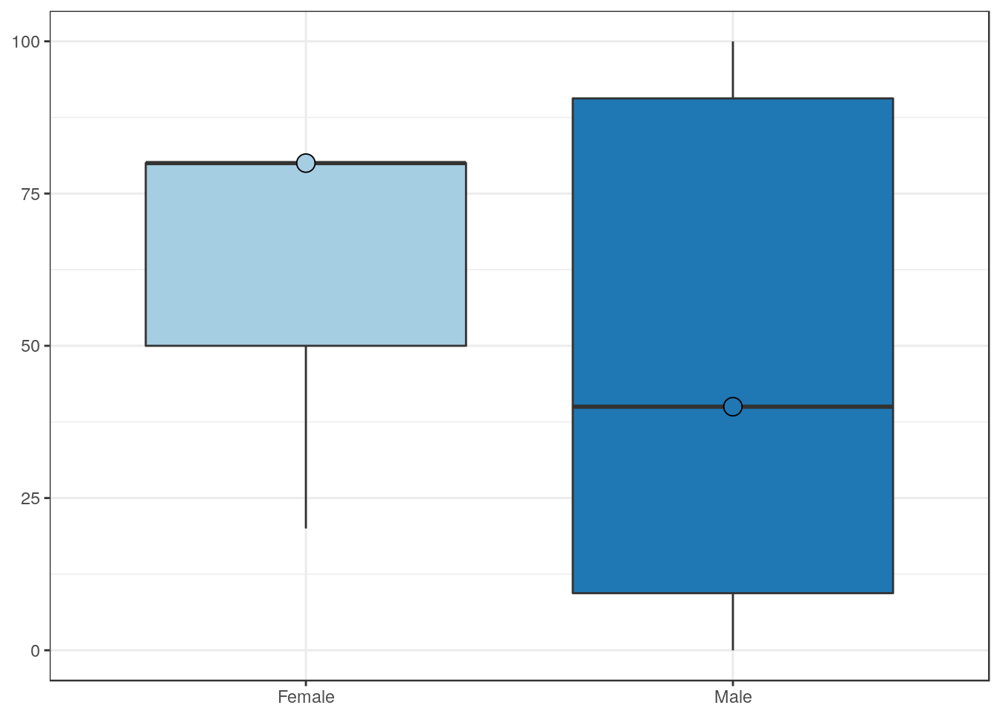
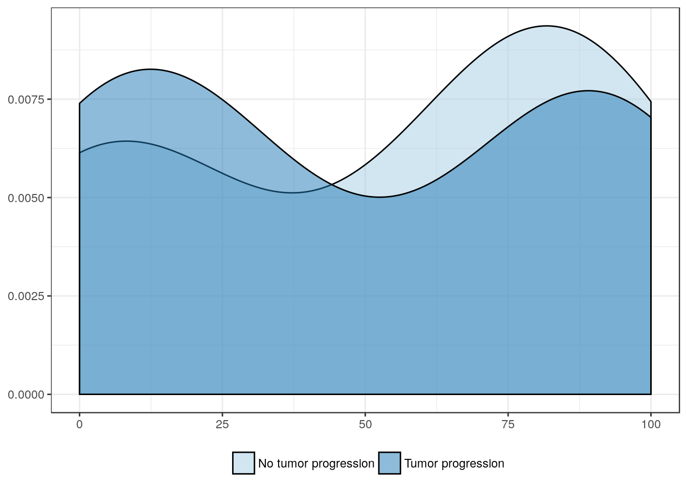

Â
By median PAICS extent - TMA 672
Clinical features
Age
| Younger age | Older age | |
|---|---|---|
| Mean | 40.0 | 61.1 |
| Standard deviation | 37.9 | 36.7 |
| Median | 30.0 | 80.0 |
| Interquartile range | 75.0 | 63.8 |
| Minimum | 0.0 | 5.0 |
| Maximum | 95.0 | 100.0 |
| Value | |
|---|---|
| U-statistic | 43 |
| P statistic | 1.6e-01 |
Sex

| Female | Male | |
|---|---|---|
| Mean | 60.0 | 48.6 |
| Standard deviation | 34.6 | 39.1 |
| Median | 80.0 | 40.0 |
| Interquartile range | 30.0 | 81.2 |
| Minimum | 20.0 | 0.0 |
| Maximum | 80.0 | 100.0 |
| Value | |
|---|---|
| U-statistic | 33 |
| P statistic | 8.2e-01 |
Race

| a | African American | Caucasian | |
|---|---|---|---|
| Mean | 35.8 | 10 | 54.5 |
| Standard deviation | 51.3 | NA | 36.5 |
| Median | 7.5 | 10 | 60.0 |
| Interquartile range | 45.0 | 0 | 70.0 |
| Minimum | 5.0 | 10 | 0.0 |
| Maximum | 95.0 | 10 | 100.0 |
| Value | |
|---|---|
| Statistic | 1.215 |
| Parameter | 2 |
| P statistic | 0.54 |
Pathologic features
Pathologic stage
| pT1 | pT2 | pT3 | pT4 | |
|---|---|---|---|---|
| Mean | 93.8 | 49.4 | 34.4 | 70.0 |
| Standard deviation | 1.8 | 40.0 | 36.1 | 26.5 |
| Median | 93.8 | 40.0 | 20.0 | 80.0 |
| Interquartile range | 1.2 | 75.0 | 55.0 | 25.0 |
| Minimum | 92.5 | 5.0 | 0.0 | 40.0 |
| Maximum | 95.0 | 100.0 | 95.0 | 90.0 |
| Value | |
|---|---|
| Statistic | 5.405 |
| Parameter | 3 |
| P statistic | 0.14 |
Clinical stage
| I | II | III | IV | |
|---|---|---|---|---|
| Mean | 93.8 | 39.6 | 38.2 | 60.0 |
| Standard deviation | 1.8 | 40.3 | 36.1 | 36.6 |
| Median | 93.8 | 17.5 | 40.0 | 80.0 |
| Interquartile range | 1.2 | 55.0 | 66.2 | 58.8 |
| Minimum | 92.5 | 5.0 | 0.0 | 7.5 |
| Maximum | 95.0 | 100.0 | 80.0 | 95.0 |
| Value | |
|---|---|
| Statistic | 5.483 |
| Parameter | 3 |
| P statistic | 0.14 |
Adjacent CIS
| No CIS | CIS | |
|---|---|---|
| Mean | 46.9 | 50.8 |
| Standard deviation | 48.5 | 37.1 |
| Median | 48.8 | 40.0 |
| Interquartile range | 80.6 | 71.2 |
| Minimum | 0.0 | 2.5 |
| Maximum | 90.0 | 100.0 |
| Value | |
|---|---|
| U-statistic | 32 |
| P statistic | 6.5e-01 |
Lymphovascular invasion
| No lymphovascular invasion | Lymphovascular invasion | |
|---|---|---|
| Mean | 54.4 | 45.0 |
| Standard deviation | 42.2 | 35.2 |
| Median | 80.0 | 40.0 |
| Interquartile range | 82.5 | 62.5 |
| Minimum | 0.0 | 5.0 |
| Maximum | 100.0 | 90.0 |
| Value | |
|---|---|
| U-statistic | 68.5 |
| P statistic | 5.2e-01 |
Lymph node metastasis
| Negative lymph nodes | Positive lymph nodes | |
|---|---|---|
| Mean | 44.3 | 60.0 |
| Standard deviation | 38.8 | 36.6 |
| Median | 40.0 | 80.0 |
| Interquartile range | 73.8 | 58.8 |
| Minimum | 0.0 | 7.5 |
| Maximum | 100.0 | 95.0 |
| Value | |
|---|---|
| U-statistic | 36 |
| P statistic | 3.5e-01 |
Outcome features
Tumor progression

| No tumor progression | Tumor progression | |
|---|---|---|
| Mean | 52.8 | 48.9 |
| Standard deviation | 40.2 | 41.4 |
| Median | 70.0 | 40.0 |
| Interquartile range | 74.4 | 78.8 |
| Minimum | 2.5 | 0.0 |
| Maximum | 92.5 | 100.0 |
| Value | |
|---|---|
| U-statistic | 42.5 |
| P statistic | 9.3e-01 |
Visceral metastasis
| No visceral metastasis | Visceral metastasis | |
|---|---|---|
| Mean | 52.7 | 45.3 |
| Standard deviation | 37.8 | 40.7 |
| Median | 60.0 | 30.0 |
| Interquartile range | 72.5 | 76.9 |
| Minimum | 0.0 | 5.0 |
| Maximum | 95.0 | 100.0 |
| Value | |
|---|---|
| U-statistic | 62.5 |
| P statistic | 9e-01 |
Overall mortality
| AWD + ANOD | DOD + DOC | |
|---|---|---|
| Mean | 41.2 | 53.2 |
| Standard deviation | 42.1 | 37.4 |
| Median | 32.5 | 40.0 |
| Interquartile range | 70.0 | 72.5 |
| Minimum | 2.5 | 0.0 |
| Maximum | 95.0 | 100.0 |
| Value | |
|---|---|
| U-statistic | 37.5 |
| P statistic | 3.6e-01 |